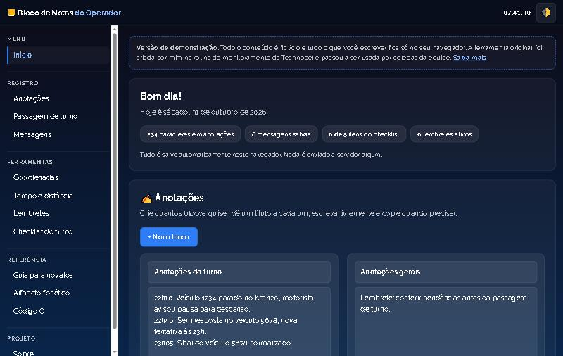

Bloco de Notas do Operador: uma ferramenta que a equipe adotou
Ver a demo · Código no GitHub · Portfólio

Na minha rotina de operador de monitoramento na Technocel Gerenciamento de Risco, eu precisava de um lugar único para anotar, personalizar mensagens e copiar textos para outros sistemas. Criei uma página para isso, e cerca de 8 colegas da equipe passaram a usar. O turno não era grande, mas a ferramenta ajudou porque a equipe registrava todos os dias as ocorrências sobre os motoristas, como a falta de sinal do veículo, e o bloco servia para montar as mensagens personalizadas e copiar o texto. Ele também reunia conteúdo educativo para novatos.
O projeto em resumo
- O que é: página única com anotações, passagem de turno, mensagens editáveis, ferramentas de apoio (coordenadas, tempo, distância, lembretes, checklist) e um guia para novatos.
- Tecnologias: HTML, CSS e JavaScript puros.
- Impacto: usado por cerca de 8 pessoas na equipe como instrumento de trabalho.
Duas versões
Versão original (privada)
Foi feita para o trabalho e continha manuais, procedimentos, contatos e nomes de clientes da empresa. Por isso o repositório é privado.
Versão de demonstração (pública)
Reescrita do zero para o portfólio, com conteúdo fictício, sem as cinco bibliotecas do original e com menu lateral, acessibilidade e responsividade.
Anotações técnicas
- Salvar no navegador com
localStorage - Copiar para a área de transferência com plano B
- Modelos de mensagem com campos
{{variavel}} - Lembretes com temporizador e aviso sonoro
O que aprendi
- Uma ferramenta simples e feita para uma necessidade real ganha adoção sem nenhum esforço de divulgação.
- Separar a ferramenta do conteúdo da empresa permite mostrar o trabalho sem expor nada sensível.
- Ao reescrever, trocar bibliotecas por JavaScript puro deixou o código menor e mais fácil de manter.
- Acessibilidade e privacidade (dados só no navegador) não custam caro quando entram desde o começo.